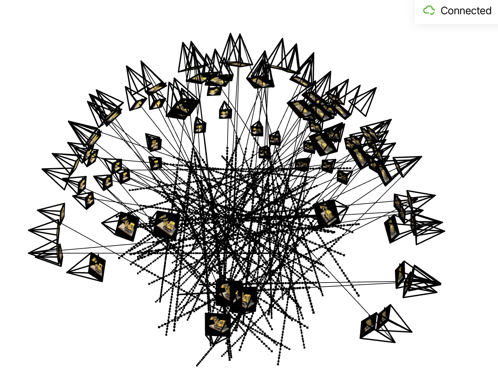

Part 1: Fit a Neural Field to a 2D Image
Model architecture
I built a simple MLP with four hidden layers, following the diagram shown below. The hidden layer dimension is set to 256, and the network consists of 4 layers. The input to the network is the pixel coordinates, and ReLU serves as the activation function between layers. The output layer has a dimension of 3, corresponding to the RGB values of the pixel. To ensure the network output is within the range (0, 1), a Sigmoid activation function is applied at the final layer.
I train the network using Adam with the learning rate of 0.001, with a batch size of 10,000. Training is performed over 1,000 epochs. When I am training network, I use negative PSNR as the loss.
The training PSNR across iterations
Results
I ploted the predicted images across iterations in epoch 1, 100, 300, 800,1500, and 3000

Sphere Las Vegas
I run the optimization on an image of Sphere Las Vegas. The hyperparameter is same as the above configuration.
The training PSNR across iterations
The predicted images in epoch 1, 100, 300, 800, 1500, 3000
Hyperparameters Tuning
I varied the level of hidden layer dimension and learning rate to check the effect
Hidden layer dimension: 128
From the PSNR curve, the value eventually reaches 26, which is significantly lower compared to the original PSNR of 30. Reducing the hidden layer dimension negatively impacts performance. This is because it make network simple, causing network less powerful.
Learning rate: 0.0001
According to the PSNR curve, the value eventually stabilizes at 27.5, which is notably lower than the original PSNR of 30 achieved with a learning rate of 0.001. Reducing the learning rate adversely affects performance, as a smaller learning rate slows down convergence.
Part 2: Fit a Neural Radiance Field from Multi-view Images
Create Rays from Cameras
\[ \begin{bmatrix} \mathbf{R}_{3 \times 3} & \mathbf{t} \\ \mathbf{0}_{1 \times 3} & 1 \end{bmatrix} \]Given a focal length \(f\) and extrinsic matrix (shows above), we can generate rays from the camera. First, the origin of each ray \(r_o\) is set to the camera center \(-R^{-1}t\). To determine the direction of a ray, the pixel coordinates need to be transformed into world coordinates. The pixel coordinates are defined as:
$$ \mathbf{p} = \begin{bmatrix} u \\ v \end{bmatrix} $$The intrinsic matrix is defined as
: \[ \mathbf{K} = \begin{bmatrix} f & 0 & o_x \\ 0 & f & o_y \\ 0 & 0 & 1 \end{bmatrix} \]where o_x and o_y are half of image width and image height separately.
Now, we can compute camera coordinate by following operation and set depth(s) to 1:
\[ X_c = \begin{bmatrix} x_c \\ y_c \\ z_c \end{bmatrix} = \mathbf{K^{-1}} s \begin{bmatrix} u \\ v \\ 1 \end{bmatrix} \]Then, the world coordinates can be computed as follows:
\[ X_{w} = \begin{bmatrix} x_w \\ y_w \\ z_w \\ 1 \end{bmatrix} = \begin{bmatrix} \mathbf{R}_{3 \times 3} & \mathbf{t} \\ \mathbf{0}_{1 \times 3} & 1 \end{bmatrix}^{-1} \begin{bmatrix} x_c \\ y_c \\ z_c \\ 1 \end{bmatrix} \]Once we get the world coordinate, we can use it to determine the direction of ray by equation:
\[ \mathbf{r}_d = \frac{\mathbf{X}_w - \mathbf{r}_o}{\|\mathbf{X}_w - \mathbf{r}_o\|_2} \]Sampling
Sampling Rays from Images
I compute the origin of ray \(r_o\) and the direction of ray \(r_d\) by previous part. In sampling, I flatten all pixels from all images and do a global sampling once to get N rays from all images.
Sampling Points along Rays
Give the direction of ray \(r_d\), we can sample the point on the ray by the equation:
\[ \mathbf{x} = \mathbf{r}_o + \mathbf{r}_d \cdot t \]where \(t = np.linspace(2.0, 4.0, 64)\)
In the training process, in order to overcome overfitting, I introduce some small perturbation to the points, which is achieved by: \(t = t + (np.random.rand(t.shape) * t_{width}\). In my implementation, I set \(num_sample\) to 64.
Putting the Dataloading All Together
I use \(torch.utils.data.Dataset, torch.utils.data.DataLoader\) to create dataset and dataloader. Dataloader returns ray origin, ray direction and pixel colors of images. To verify my dataset and dataloader, I visualize cameras, rays, and samples in 3D:
Neural Radiance Field
I followed the instructions in the diagram to construct the network architecture of a Neural Radiance Field (NeRF). Given a point on the ray and the direction of the ray, the model predicts both the RGB value and the density of the point. I use an MLP to make these predictions. The input to the model consists of 3D point coordinates and the ray’s direction. ReLU is used as the activation function between layers.The network begins with four hidden layers, each with 256 dimensions and then concatenate the output with positional encoding of coordinate. Four hidden layers, each with 256 dimensions process the concatenation feature. Finally, The output is fed into two separate MLPs: one for predicting RGB values and the other for predicting density. The RGB MLP has an output dimension of 3, while the density MLP has an output dimension of 1. At the end of the RGB MLP, a Sigmoid activation layer is added to ensure the output lies within the range of (0, 1). For the density MLP, a ReLU activation layer is applied to ensure the output is non-negative.
In the experiment, I set the hidden dimension to be 256. The learning rate is set to be 5e-4. The batch size is set to be 10000 (rays). The position encoding of ray direction is set to be 4 and the coordinate is set to be 10.
Volume Rendering
Once we have the RGB value and density of the point, we can render a ray by:
\[ \hat{C}(\mathbf{r}) = \sum_{i=1}^N T_i \left( 1 - \exp(-\sigma_i \delta_i) \right) \mathbf{c}_i, \quad \text{where } T_i = \exp\left(-\sum_{j=1}^{i-1} \sigma_j \delta_j\right) \]where \(c_i\) is the RGB value of the point, \(\sigma_i\) is the density of the point
Visualization of the rays and samples
I plot 100 rays which are randomly sampled from the training set. 64 samples are sampled along each ray.
Training process
In my experiment, I set batch size to 10000 and epochs to 100 during training process. Thus, there are 400 gradient steps per epoch.
I plotted predicted images on epoch 1, 2, 3, 4, 5, 20, 40, 60, 80, 100
During the training process, I use the negative PSNR as the loss function for gradient descent. In the graph below, I have plotted the PSNR for both the training set and the validation set.
Spherical rendering
After training network on 100 epochs, I used camera extrinsics from test set to render images of the lego from different views. And I get the final results like this:
Bells & Whistles
White Background
Upon examining the volume rendering equation more closely, I discovered that to change the background color of the image, we can add a background color sample at the end of the ray. This ensures that if the ray does not intersect with any object, its resulting color will default to white. Finally, I get a lego video with white background color like this: